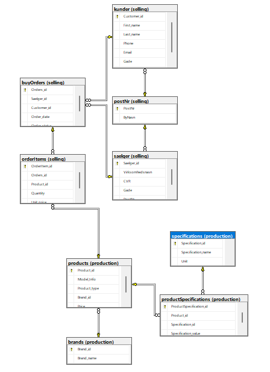
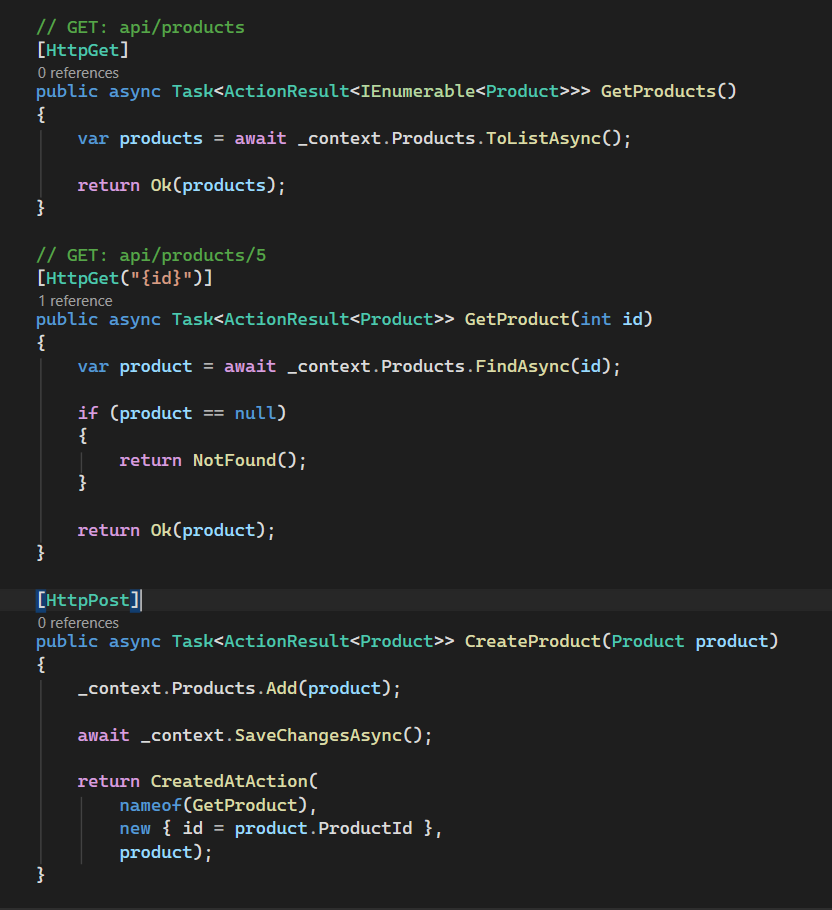
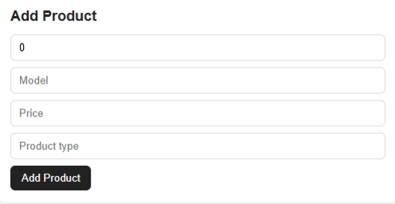

1. Databasedesign og -udvikling
Jeg designede og oprettede en Microsoft SQL Server-database til at opbevare og administrere de data, der bruges på mit PC-websted. Databasen fungerer som grundlaget for projektet.
Tabeller og visninger
Jeg oprettede tabeller og visninger for at organisere og hente data. Samtidig arbejdede jeg på at reducere unødvendig dataduplikering og sikre ensartede data.
Databaserelationer

Jeg brugte værktøjet Database Diagram i SQL Server Management Studio til at visualisere relationerne mellem tabellerne og få et overblik over databasens struktur.
Brugere og tilladelser
Jeg konfigurerede databasebrugere og tilladelser for at kontrollere adgangen til databasen. API'et håndterer kommunikationen med databasen, så databaseoplysninger ikke eksponeres i hjemmesidens frontend.
Anvendte teknologier
Microsoft SQL Server · SQL Server Management Studio · SQL
2. API-udvikling
Jeg udviklede et ASP.NET Core-API, der forbinder hjemmesiden med databasen. API'et henter produktdata og gør det muligt at gemme nye produkter.

API'et bruger Entity Framework Core til at tilgå databasen og indeholder endpoints til at hente enkelte produkter, vise en liste over produkter og oprette nye produkter.
3. Integration med hjemmesiden
Produktside
Jeg forbandt hjemmesiden med API'et, så produkterne hentes fra databasen. Jeg implementerede også produktsøgning, filtrering efter model, minimums- og maksimumspris samt en knap til at nulstille filtrene.
Tilføjelse af produkter

Jeg tilføjede en formular, der gør det muligt at indsende nye produkter via hjemmesiden. Produkterne gemmes derefter i databasen gennem API'et.
Anvendte teknologier
HTML · CSS · ASP.NET Core · Entity Framework Core · SQL Server
Databasens GitHub-lagerAPI'ets GitHub-lager
Luk